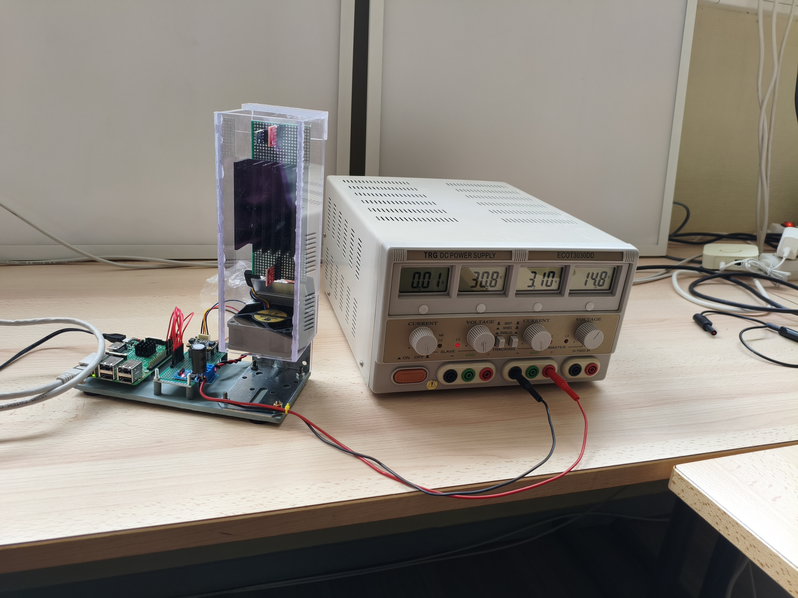
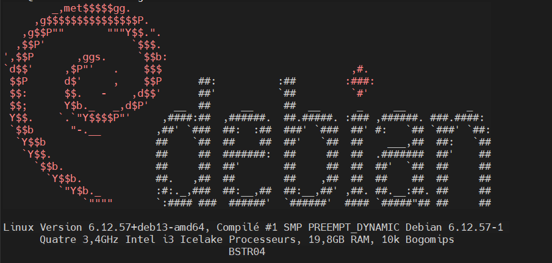

Mes Projets

PyMODQ
Description : Développement d'un démon Python pour la gestion de périphériques I2C sur un système Linux embarqué, avec communication via ZeroMQ.
Réalisations techniques :
- Création d'un démon Python pour la gestion de périphériques I2C sur un système Linux embarqué.
- Implémentation de la communication inter-processus via ZeroMQ pour la transmission des données.
- Gestion des signaux et des interruptions pour assurer une communication efficace avec les périphériques I2C.
- Intégration avec Systemd pour le démarrage automatique du démon au boot du système.

Infrastructure Système & Réseau (Home Lab)
Description : Conception et déploiement d'une infrastructure serveur complète à domicile (Home Lab) dédiée à l'auto-hébergement, à la virtualisation et à la sécurité réseau.
Réalisations techniques :
- Administration système Linux (Debian) et gestion en ligne de commande (SSH).
- Orchestration de conteneurs via Docker et supervision avec Portainer.
- Gestion des accès et sécurité : VPN Mesh (Tailscale) et Reverse Proxy (Nginx).
- Mise en place de services : Dashboard personnel (Dashy), filtrage DNS (Pi-hole) et serveur de fichiers (Samba).

Spiky Adventures (2D Platformer)
Description : Jeu de plateforme inspiré de Mario où l'objectif est de traverser des niveaux en évitant obstacles et ennemis.
Réalisations techniques :
- Création des Tilemaps et conception des niveaux.
- Scripting C# : Mouvements, Pièges (Traps) et IA basique.
- Gestion complète du workflow : de la conception du personnage à l'interface.